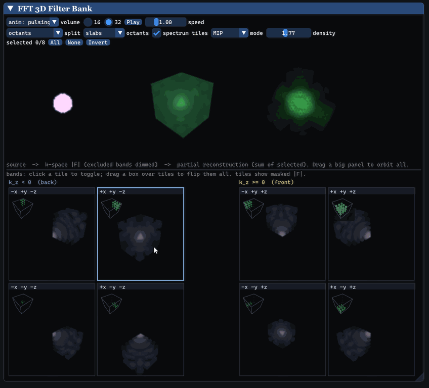

Interactive application
Interactive Video
Overview · selected highlights
Theory Workbench
A reusable C++ visualization library gives each completed algorithm a place to show its inputs, working state and result. The collection favors convenient inspection over a custom presentation for every study. Examples include selecting regions of a 3D Fourier spectrum and seeing what they reconstruct, alongside 2D filtering and Gaussian fitting.
ConstructTransformInspect
- f
Start from a target
Choose a signal, image or supported native volume study.
- F
Inspect the representation
Reveal Fourier coefficients or a collection of Gaussian primitives.
- ≋
Change the components
Select frequency regions or adjust the fitting parameters.
- ↺
Reconstruct the result
Compare each contribution with the original target.
A shared framework makes a broad collection easy to inspect; dedicated visualizers give selected ideas a more tailored presentation.

